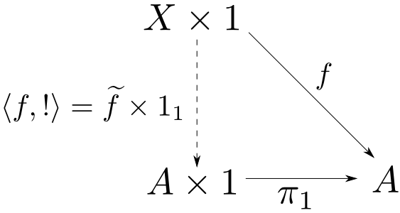

この勉強会の企画，会場設備の提供をして頂きました
㈱ ワークスアプリケーションズ様
にこの場をお借りして御礼申し上げます。
これまでに説明した極限・余極限とは異なる形の普遍性を持つ指数対象という概念と、それに基づくデカルト閉圏という圏、Curry-Howard-Lambek対応について説明します。
第4回に
など、関数の集合にpointwiseに演算・関係を定義して構造を入れるという話題を紹介しました。
関数の集合に構造を入れてそれ自体を考察の対象にする場合、その集合を関数空間(function space)などと呼びますが、その圏論的な一般化が指数対象(exponential object)です。$A$から$B$への指数対象を$B^A$と表します。
また、$\mathrm{Hom}_{\mathbf{C}}(A,B)$は$\mathbf{Sets}$の対象ですが、
「$\mathrm{Hom}_{\mathbf{C}}(A,B)$に$\mathbf{C}$の対象と同じ構造を入れたもの」
は$\mathbf{C}$の対象である事に注意しましょう。指数対象は圏$\mathbf{C}$の中で$\mathrm{Hom}$集合を表現する対象とも言えます。
$\mathbf{Sets}$においては $$ B^A \cong \mathrm{Hom}(A, B) $$ なのでとても分り易いです。まずこれを考えて、その後一般化しましょう。
さて「対象$B^A$は$A$から$B$への射の集合である」という定義は対象の内部構造を述べているので一般化出来ません。対象$B^A$と外部との関係によって定式化する方法を考えます。
そこで任意の対象$X$から指数対象への射$g: X\rightarrow B^A$がどのように定まるかを考えます。
$\mathbf{Sets}$で解釈すると,$g$は「$A$から$B$への関数を返す関数」なので任意の$x\in X$と$a \in A$に対して $$ g(x)(a) \in B $$ となります。
つまり$g$は $$ g(x)(a) = f(x, a) $$ を満たす関数$f: X\times A \rightarrow B$と一対一に対応します。
$h\in B^A$を$a \in A$に適用する関数 $$ \epsilon: B^A\times A \ni (h,a) \longmapsto h(a) \in B $$ を用意すれば、等式$g(x)(a) = f(x, a)$は $$ \epsilon \circ (g\times 1_A) = f$$ と表されます。
まとめると、$\mathbf{Sets}$における$A$から$B$への指数対象とは 集合と関数の組$(B^A, \epsilon)$であり、 任意の関数$f: X\times A \rightarrow B$に対して $$ \epsilon \circ (g\times 1_A) = f $$ を満たす$g$が唯一に定まる事であると表現出来そうです。
$\mathbf{C}$を任意の二対象の積を持つ圏とする。対象と射の組$(B^A, \epsilon)$が$A$から$B$への 指数対象(exponential)であるとは、任意の対象$X$と射$f: X\times A\rightarrow B$に対して $$ \epsilon\circ (\widetilde{f}\times 1_A) = f $$ を満たす$\widetilde{f}: X\rightarrow B^A$が唯一つ存在する事である。また$\epsilon: B^A\times A \rightarrow B$を評価射(evaluation map)と呼ぶ。
指数対象は同型を除いて一意となります(練習問題)。
$f$を$\widetilde{f}$に変換する事をカリー化(currying)と言います。 また、カリー化の逆変換を非カリー化(uncurrying)と呼び、$\overline{(-)}$と表します。 $g$の非カリー化は先ほどの定義より $$ \overline{g} = \epsilon \circ (g\times 1) $$ で与えられます。
これらは以下の同型対応を与えます。
圏$\mathbf{C}$において
ならば$\mathbf{C}$をデカルト閉圏(cartesian closed category)と言う。CCCと略記する事もある。
任意の対象$A$に対して
任意の対象$A,B,C$に対して
が成り立ちます。
【$A^1\cong A$の証明】

対象$A$から終対象への唯一の射を$!_A$と表す。
任意の$f: X\times 1 \rightarrow A$に対して,
$$ \pi_1\circ (\widetilde{f}\times 1_1) = f $$
を満たす$\widetilde{f}$は
$$ \widetilde{f}\times 1_1 = \langle \widetilde{f}\circ\pi_1, !_{X\times 1}\rangle $$
を代入して$$\widetilde{f}\circ\pi_1 = f$$を満たす。従って積の普遍性より
$$ \widetilde{f} = f\circ \langle 1_{X\times 1}, !_{X\times 1}\rangle $$
と$\widetilde{f}$が唯一に定まるので$(A,\pi_1)$が$A^1$と評価射である。
□
【$C^{A\times B}\cong (C^B)^A$の証明】
対象$A$から終対象への唯一の射を$!_A$と表す。
$C^{A\times B}$の評価射を$\epsilon$とする。
$C^B$の評価射を$\varepsilon$とする。
ここで積の結合性(第6回)より同型 $$\mathrm{assoc}: (X\times Y)\times Z \cong X\times (Y\times Z)$$ が存在するので $$ \epsilon' = \epsilon\circ \mathrm{assoc}$$ とおく。
この$\epsilon'$をカリー化した射$\widetilde{\epsilon'}: C^{A\times B}\times A \rightarrow C^B$は
$$ \varepsilon\circ (\widetilde{\epsilon'}\times 1_B) = \epsilon' $$
を満たす事に注意する。
ここで$(C^{A\times B}, \widetilde{\epsilon'})$が$(C^B)^A$と同じ普遍性を満たす事を示せば証明が完了する。そこで$f: X\times A \rightarrow C^B$に対して$u: X\rightarrow C^{A\times B}$が存在し
$$ \widetilde{\epsilon'}\circ(u\times 1_A) = f$$
が成り立つと仮定すると、両辺に$1_B$を掛けて
$$ (\widetilde{\epsilon'}\times 1_B)\circ ((u\times 1_A)\times 1_B) = f\times 1_B$$
となり、さらに$\varepsilon$を掛けると
$$ \epsilon'\circ ((u\times 1_A)\times 1_B) = \varepsilon\circ (f\times 1_B)$$
となる。
すると両辺の結合を調整して $$ \epsilon \circ \mathrm{assoc} \circ ((u\times 1_A)\times 1_B)\circ \mathrm{assoc}^{-1} = \varepsilon\circ (f\times 1_B)\circ \mathrm{assoc}^{-1}$$ すなわち $$ \epsilon \circ (u\times 1_{A\times B}) = \varepsilon\circ (f\times 1_B)\circ \mathrm{assoc}^{-1}$$ となるから、$u$は$\varepsilon\circ (f\times 1_B)\circ \mathrm{assoc}^{-1}$をカリー化したものとして一意に定まる。従って$C^{A\times B}$は$(C^B)^A$の条件を満たすので、そのような対象が同型を除いて一意であることより $$ C^{A\times B} \cong (C^B)^A$$ である。□
$C^{A\times B}\cong (C^B)^A$を直接的に証明しましたが、もっと良い見方があります。
$\mathrm{Hom}_{\mathbf{C}}(X,Y)$を$\mathrm{C}$内部で表したのが$Y^X$だと思うとこの同型は 先ほど紹介した同型 $$ \mathrm{Hom}_{\mathbf{C}}(A\times B, C)\cong\mathrm{Hom}_{\mathbf{C}}(A,C^B) $$ を$\mathbf{C}$の内部で表したものに他ならないという事が解ります。
このような事が出来る背景には米田の補題という定理がありますが、来週扱う予定です。
同様に $$ \begin{aligned} &\mathrm{Hom}_{\mathbf{C}}(A, 1) \cong 1\\ & \mathrm{Hom}_{\mathbf{C}}(A, B\times C) \cong \mathrm{Hom}_{\mathbf{C}}(A, B)\times \mathrm{Hom}_{\mathbf{C}}(A, C) \end{aligned} $$ に対応して
が成り立ちます。
積と余積を持つ圏$\mathbf{C}$において任意の対象$A,B,C$に対して同型 $$ A\times B + A \times C \cong A\times (B + C) $$ が成り立つ時その圏は分配的(distributive)であると言いますが、デカルト閉圏に関して以下の事実が成り立ちます。
デカルト閉圏に始対象と任意の$A,B$の余積$A+B$が存在するならば、分配的である。
詳しい証明は来週やります。ただし今まで学んだ定理を使うと、任意の$X$に対して $$\begin{aligned} \mathrm{Hom}(A\times (B+C), X) &\cong \mathrm{Hom}(B+C,X^A) \\ &\cong \mathrm{Hom}(B,X^A)\times \mathrm{Hom}(C,X^A) \\ &\cong \mathrm{Hom}(A\times B, X)\times\mathrm{hom}(A\times C,X)\\ & \cong \mathrm{Hom}(A\times B + A\times C, X) \end{aligned} $$ が成り立つという所が証明の本質です。
デカルト閉圏$\mathbf{C}$において、対象$A$を固定して
対応させる事は函手$(-)^A: \mathbf{C}\rightarrow\mathbf{C}$となる。
証明は練習問題としますが、具体例として$\mathbf{Sets}$の場合を考えてみます。
$\mathbf{Sets}$における$X^A$は$\mathrm{Hom}(A, X)$の事でした。 また評価射$\epsilon$は $$ \epsilon (g,a) = g(a) $$ により定義されるので $$ f\circ \epsilon (g,a) = f\circ g(a) $$ となります。これをカリー化したものは $$ \widetilde{f\circ\epsilon}(g) = f\circ g$$ なので$f^A$は「$f$を左から合成する関数」になります。
つまり$\mathbf{Sets}$における函手$(-)^A$は($\mathbf{Sets}$から$\mathbf{Sets}$への)共変$\mathrm{Hom}$函手に他なりません。
Curry-Howard対応とは論理の体系と計算の体系の同型関係を指し、様々なバリエーションが存在します。特にCurry-Howard-Lambek対応とは直観主義命題論理、型付き$\lambda$計算、デカルト閉圏の間に同型対応が存在するというものです。
形式的証明(formal proof)とは、 証明を論理式の機械的な変形(推論)の列として表す事を言います。
形式的証明の体系には様々なものが存在しますが、ここでは論理記号として$\wedge$と$\Rightarrow$のみを用いる直観主義命題論理の自然演繹と呼ばれる体系を紹介します。
によって帰納的に構築される論理式が$\wedge,\Rightarrow$論理の論理式です。
結合順位は$\wedge$の方が高く、例えば $ P\wedge Q \Rightarrow P$ は$(P\wedge Q)\Rightarrow P$の意味です。
前提(論理式の列)$A_0,A_1,\cdots,A_n$の下での$P$の証明を
$$ A_0,A_1,\cdots,A_n \vdash P$$
と書きます。前提の順序は自由に並べ替えて良いです。
この体系では、以下の規則に従って上から下へ証明を書き換えていく事によって求める証明を導出します。
($\Gamma$は$0$個以上の論理式の列)
例えば$$ \vdash A\Rightarrow (B\Rightarrow A)$$ の導出は以下のようになります。
とすると$\wedge,\Rightarrow$-論理の体系をCCC上で解釈する事が出来ます。
対応は以下のようになります。
形式証明の体系には「記号」しか無いわけですが、今の対応によって「記号」に具体的な数学対象である「CCCの対象・射」を割り当てる事が出来ます。 この事をCCCはその体系のモデル(model)である等と言います。
形式体系とモデルの関係に関して、「証明出来るなら真である」という健全性(soundness)や「真ならば証明出来る」という完全性(completeness)などの重要な性質があります。時間の関係上この勉強会では深く扱えませんが是非テキストを読んでみて下さい。
$\lambda$計算とは「計算」という概念を数学的に定式化する手法の一つで、関数型言語の基礎にあります。 「計算」にもいろいろな考え方がありますが、$\lambda$計算は式(項)を書き換えていくという形式の計算を形式化したものです。
型付き$\lambda$計算の文法及び片付け規則は以下のようになります。これを言語$L$と表す事にします。
言語$L$の上にいくつか公理(この場合は同値関係)を追加すると一つの$\lambda$計算の体系$\mathcal{L}$が出来上がります。基本となる関係は以下のものです。 $$\begin{aligned} & \pi_1(a,b) = a\quad \pi_2(a,b) = b\quad (\pi_1(c),\pi_2(c)) = c\\ & (\lambda x.b)a = b[a/x] \\ & \lambda x.cx = c\quad (\text{変数$x$が$c$の中に自由には現れない時})\\ & \lambda x.c = \lambda y.c[y/x] \quad(\text{変数$y$が$c$の中に自由には現れない時}) \end{aligned}$$ ここで$b[a/x]$とは項$b$内の$x$を$a$に置き換えるという意味です。体系$\mathcal{L}$の下で$a = b$となる事を $$ \mathcal{L}\vdash a = b $$ と表します。
$\lambda$計算の体系$\mathcal{L}$が与えられた時に
とすると言語$L$の項にCCC上の対象・射を用いて意味を与える事が出来ます。
この場合の恒等射・関数合成は $$ \begin{aligned} &1_A = [\lambda x.x] \quad (x: A) \\ &g\circ f = [\lambda x. g(fx)] \quad (f:A\rightarrow B,g:B\rightarrow C, x:A) \end{aligned} $$ となります。各法則の確認は練習問題とします。
また型$A\times B$が積$A\times B$、型$A\rightarrow B$が指数対象$B^A$に対応します。この時 $$ \begin{aligned} & \langle [f], [g]\rangle = [\lambda x. (fx, gx)]\\ & \pi_1 = [\lambda x.\pi_1\ x] \\ & \pi_2 = [\lambda x.\pi_2\ x] \\ & \widetilde{[f]} = [\lambda x.\lambda y. f(x,y)] \\ & \epsilon = [\lambda x. (\pi_1\ x)(\pi_2\ x)] \end{aligned} $$ となります。積の定義を満たす事の確認は練習問題とします。
指数対象に関して$\epsilon\circ(\widetilde{f}\times 1_A) = f$が成り立つ$\widetilde{f}$が一意に定まるという事の証明だけ書いてみます。
【証明】
任意の$f: X\times A\rightarrow B$に対して
$$\begin{aligned}
\epsilon\circ(\widetilde{f}\times 1_A) &= \epsilon \circ \langle \widetilde{f}\circ\pi_1, \pi_2\rangle \\
&= (\lambda x.(\pi_1\ x)(\pi_2\ x))\circ (\lambda y. ((\widetilde{f}\circ\pi_1)y, \pi_2\ y)) \\
&= \lambda z.(\lambda x.(\pi_1\ x)(\pi_2\ x))((\lambda y. ((\widetilde{f}\circ\pi_1)y, \pi_2\ y))z) \\
&= \lambda z.(\lambda x.(\pi_1\ x)(\pi_2\ x))((\widetilde{f}\circ\pi_1)z, \pi_2\ z) \\
&= \lambda z.((\widetilde{f}\circ\pi_1)z)(\pi_2\ z)\\
&= \lambda z.((\lambda x. \widetilde{f}(\pi_1\ x))z)(\pi_2\ z)\\
&= \lambda z.(\widetilde{f}(\pi_1\ z))(\pi_2\ z)\\
&= \lambda z.((\lambda x.\lambda y. f(x,y))(\pi_1\ z))(\pi_2\ z)\\
&= \lambda z.(\lambda y. f(\pi_1\ z, y))(\pi_2\ z)\\
&= \lambda z. f(\pi_1\ z, \pi_2\ z)\\
&= \lambda z. fz\\
&= f
\end{aligned} $$
一方$\epsilon\circ(u\times 1_A) = f$が成り立つと仮定すると $$ \begin{aligned} &\epsilon\circ(u\times 1_A) = f\\ \Rightarrow &(\epsilon\circ(u\times 1_A))(x,y) = f(x,y)\\ \Rightarrow & \epsilon((u \times 1_A)(x,y)) = f(x,y) \\ \Rightarrow & \epsilon(ux,y) = f(x,y) \\ \Rightarrow & (\lambda x.(\pi_1\ x)(\pi_2\ x))(ux,y) = f(x,y) \\ \Rightarrow & (ux)y = f(x,y) \\ \Rightarrow & \lambda y.(ux) y = \lambda y.f(x,y) \\ \Rightarrow & ux = \lambda y.f(x,y) \\ \Rightarrow &\lambda x.ux = \lambda x.\lambda y.f(x,y)\\ \Rightarrow & u = \lambda x.\lambda y.f(x,y)\\ \Rightarrow & u = \widetilde{f} \end{aligned}$$ より$u$は唯一に定まる。□
この同型対応は、ある分野での発見・手法を他の分野に応用するといった研究方法を可能にします。また、ある論理体系を見つけた時「対応する計算の体系は何か？」などといった研究の指針を与えます。 具体的な応用としては定理証明支援系が挙げられます。
お疲れ様でした。
次回は自然性及び随伴という概念の紹介をする予定です。